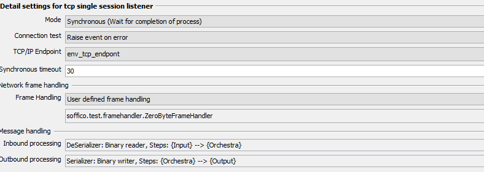

TCP Server

Topic content
Description
This channel implements an simple TCP-Server that can be used to implement user-defined TCP/IP-Protocols for receiving data from any external client. The channel operates in synchronous and asynchronous mode. In the first mode data is received from an external client and an orchestra process is started that generates an answer. In asynchronous model only data is received from a client. No answer is sent back.
The basic model of TCP/IP communication is stream oriented. This means a client can send a sequence of bytes that has to be treated by the server. Such a stream can be treated as one message or in contrast, within such a stream any number of different packets can be found. In latter mode, the protocol needs so called frames that define a logical border within the sequence of data. In default mode, orchestra assumes that all data from the client should be treated as one message. In user defined framing mode one can implement more complex protocols by defining the frame logic manually.
Purpose of object
This channel can be used for:
•Simple TCP/IP-Communication based on a s request/response protocol
•User-Defined TCP/IP-Protocols based on user defined framing
Creation
To create a Simple TCP Listener follow the steps described in the general description of Channels
Configuration
The following dialog describes the configuration settings of the channel:

Mode:
•Asynchronous: a process is only invoked
•Synchronous: a process is invoked, it will be waited untill it finished. The result of the process is sent back to the invoking client
Connection test:
•Raise event on client connect or error: Orchestra reports every change in the connection state as system event
•Raise event on error: Orchestra reports only errors as system event
TCP/IP-Endpoint:
•Choose an tcp/ip-endpoint that is used for waiting on igoing tcp/ip-connections
Synchronous timeout:
Choose the maximal duration within Orchestra must answer a message. If the process model doesn't send a message in this duration an error will be raised.
Network frame handling:
•Defines the way how orchestra should interpret the ingoing data
•In default mode, all data is read from the underlying socket until the socket (inputstream of the socket) is closed/empty.
•In user defined mode the user himself can define how orchestra should detect frames within the data stream. Whenever a frame is detected, the data is deserialized and an orchestra process is started. In this mode, an arbitrary number of frames can be detected. This mode is like a connection oriented protocol. Once a connection is established any sequence of frames/packets can be received.
Message handling:
•Defines how orchestra should treat the content transfer over the network connection.
•Within the section inbound processing, the format of the ingoing messages is defined. On basis of the configured de-serializer on orchestra message is generated by parsing the content an representing it as an orchestra message
•Withing the section outbound processing, the format of the response data is defined. In synchronous mode, the result message of a process is serialized by applying the configured serialization settings.
User defined frame handling:
When user defined frame handling has to be implemented the following base interface has to be implemented.
package emds.epi.impl.adapter.tcpserver;
import java.io.IOException; import java.io.InputStream; import java.io.OutputStream; import java.net.Socket;
import emds.epi.decl.server.message.Message; import emds.epi.decl.server.processengine.ErrorObject;
/** * Base interface that can be used to implement user defined tcp-ip-protocolls * * @author Bernd Hafenrichter * * History * ======= * 27.06.2017 BHA Created */
public interface TCPIPProtocollHandler {
/** * Returns an input stream that can be used to read data from the underlying tcp-socket stream. * If the tcp communication is packet oriented, it may return a decorated stream for each * packet of the outer stream. If null is returned the client terminates * * @param baseTCPStream * @return */
public InputStream readNextPacket( Socket socket, InputStream baseTCPStream ) throws IOException;
/** * This method is invoked when a process is successful completed during an synchronous execution. * It gives the protocol handler the changes to write back an application specific result * * @param socket The original socket that belongs to the current connection. This may be null. * @param requestMessage The request message that initially sent from the client. This may be null. * @param responseMessage The response message generated by the orchestra process. (May be null in case of an process error) * @param baseTCPStream The original output stream that can be decorated to support more complex protocol * @param result The result of the process execution * @param responseHandler Callback interface that must be invoked by any implementation in order to write * the payload of the response to the output. * * @return */
public void writeResponseOnSuccess( Socket socket, Message requestMessage, Message responseMessage, OutputStream baseTCPStream, TCPResponseHandler responseHandler ) throws IOException;
/** * This method is invoked when a process ends with an error during synchronous execution. * It gives the protocol handler the changes to write an appropriate error message the caller * * @param socket The original socket that belongs to the current connection. This may be null. * @param requestMessage The request message that initially sent from the client. This may be null. * @param responseMessage The response message generated by the orchestra process. (May be null in case of an process error) * @param baseTCPStream The original output stream that can be decorated to support more complex protocol * @param result The result of the process execution * @param responseHandler Callback interface that must be invoked by any implementation in order to write * the payload of the response to the output. * * @return */
public void writeResponseOnErrror( Socket socket, Message requestMessage, Message responseMessage, OutputStream baseTCPStream, TCPResponseHandler responseHandler, ErrorObject errorObject ) throws IOException;
/** * In case of a general error this method is invoked. It belongs to the method itself to write any kind * of error information to the caller. * * @param socket The orignal socket that belongs to the current connection. This may be null. * @param requestMessage The request message that initially sent from the client. This may be null. * @param responseMessage The response message generated by the orchestra process. May be null. * @param baseTCPStream The original outputstream that can be decorated to support more complex protocoll * @param exception The exception that was thrown during a protocoll handling * @param lastAction The action that was ongoing before the error was thrown * @return true --> keep connection open., false --> make a disconnect in order to re-initiate the connection */
public boolean writeResponseOnException( Socket socket, Message requestMessage, Message responseMessage, OutputStream baseTCPStream, Exception exception, String lastAction );
}
|
The following sample code demonstrates how a simple frame protocol can be implemented. The protocol is defined as follows:
•A frame is started by a leading 1-byte
•A frame is ended by a trailing 0-byte
•The framing is used for request and response message. This means all messages, sent back to the client, are also frame.
package soffico.test.framehandler;
import java.io.FilterInputStream; import java.io.IOException; import java.io.InputStream; import java.io.OutputStream; import java.net.Socket;
import emds.epi.decl.server.message.Message; import emds.epi.decl.server.processengine.ErrorObject; import emds.epi.impl.adapter.tcpserver.TCPIPProtocollHandler; import emds.epi.impl.adapter.tcpserver.TCPResponseHandler;
public class ZeroByteFrameHandler implements TCPIPProtocollHandler {
/* ************************************************************ * Internal variable used for generation of proxy functions. * Do not remove or change this line * ************************************************************/
final static Class JAVACLASS = ZeroByteFrameHandler.class;
/** * Returns an input stream that can be used to read data from the underlying tcp-socket stream. * If the tcp communication is packet oriented, it may return a decorated stream for each * packet of the outer stream. If null is returned the client terminates * * @param baseTCPStream * @return */
@Override public InputStream readNextPacket( Socket socket, InputStream baseTCPStream ) throws IOException {
int value = baseTCPStream.read();
if( value != 1 ) { return null; }
return new FilterInputStream( baseTCPStream ) {
boolean lastWastEOF = false;
public int read() throws IOException{
if( lastWastEOF ) { return -1; }
int value = super.read();
System.out.println( "Read byte: " + value );
if( value == 0 ) { lastWastEOF = true; return -1; }
return value; }
public int read(byte[] b) throws IOException {
if( lastWastEOF ) { return -1; }
for( int i = 0; i < b.length; i++ ) {
int data = read();
if( data == -1 ) { return i == 0 ? -1 : i; }
b[ i ] = (byte)data; }
return b.length; }
public int read(byte[] b, int off, int len) throws IOException {
if( lastWastEOF ) { return -1; }
for( int i = 0; i < len; i++ ) {
int data = read();
if( data == -1 ) { return i == 0 ? -1 : i; }
b[ off + i ] = (byte)data; }
return len; } }; }
/** * This method is invoked on successful process execution. It gives the protocol handler the changes * to write the orchestra result back to client. */
public void writeResponseOnSuccess( Socket socket, Message requestMessage, Message responseMessage, OutputStream baseTCPStream, TCPResponseHandler responseHandler ) throws IOException { baseTCPStream.write( 1 ); // Write start frame character responseHandler.writeResponseToStream( socket, baseTCPStream, responseMessage ); baseTCPStream.write( 0 ); // Write end fame character }
/** * In case of a process error this method is invoked. It belongs to the method itself to write any kind * of error information to the caller. In this case we write back the constant "1" . This informs the * call that some error occurred */
public void writeResponseOnErrror( Socket socket, Message requestMessage, Message responseMessage, OutputStream baseTCPStream, TCPResponseHandler responseHandler, ErrorObject errorObject ) throws IOException { baseTCPStream.write( 1 ); // Write end frame charachter. This indicates an error; baseTCPStream.write( 0 ); // Write end frame charachter. This indicates an error; }
/** * In case of a general error this method is invoked. It belongs to the method itself to write any kind * of error information to the caller. */
public boolean writeResponseOnException( Socket socket, Message requestMessage, Message responseMessage, OutputStream baseTCPStream, Exception exception, String lastAction ) { return false; } } |